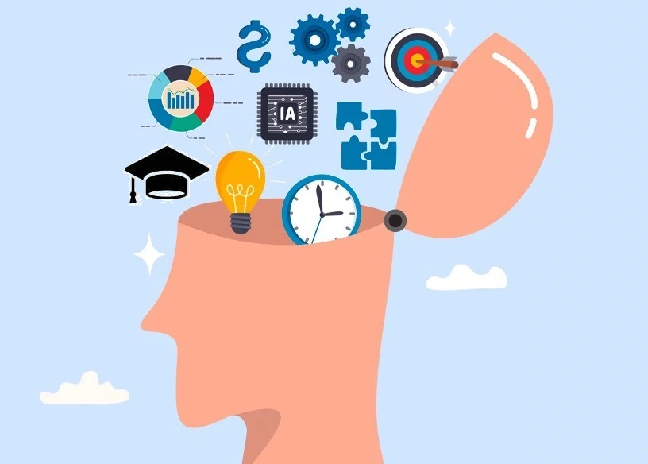

Atualizado em: - By: Iraê César Brandão
Olá,
espero encontrá-lo(a) bem!
Abordaremos algumas dicas sobre Hard e Soft Skills destinado à profissionais da área de Contabilidade.
Participando de grupos e em convivência com colegas, julguei importante realizar uma pesquisa com o objetivo
de entender melhor as demandas e desafios enfrentados pelos profissionais de contabilidade em nossos dias.
Você vai compreender alguns pontos relevantes e formas de melhoria de seus requisitos como profissional,
e saber quando e como utilizá-los.
O mercado de trabalho está valorizando muito esses requisitos e as dicas são de grande valia.
Importante frisar que os fatores podem ser alguns dos empecilhos que os profissionais em início de
carreira podem enfrentar, como:
- Falta de habilidades técnicas,
- Pouco autoconhecimento profissional,
- ou a ausência de experiência de uma forma global.
Entretanto, saber aproveitar os pontos
fortes também é essencial.
Espero que seja proveitoso o conteúdo compartilhado.
O objetivo dessas dicas tem como foco assuntos importantes para a projeção profissional.
Curioso? Vamos lá?
O que são hard e soft skills
Toda área de uma empresa possui características específicas e os profissionais que atuam nelas, precisam de uma junção de habilidades necessárias para cumprir suas tarefas. Por conta disso, é necessário estudar e aprimorar constantemente suas hard e soft skills, que hoje são tão solicitadas pelas equipes de RH.
Hard Skills:
→ As Hard Skills, ou habilidades técnicas do profissional, são todos os conhecimentos aprendidos em sala de aula, graduações, especializações. Enfim, é todo e qualquer conhecimento que pode ser comprovado por meio de diplomas, avaliações ou testes.
Dessa forma, para começar a aplicar conhecimentos técnicos, você precisa ter uma boa base de informação. E quanto maior essa base, melhor o nível de atuação do profissional.
Por um tempo, as hard skills foram a principal fonte de análise de um candidato, por serem mais fáceis de mensurar.
Alguns exemplos de habilidades técnicas são:
▷ Domínio de línguas estrangeiras;
▷ Programação;
▷ Domínio do Excel Avançado;
▷ Gestão de pessoas e gestão de projetos.
Soft Skill
→ As soft Skills, ou habilidades comportamentais de um profissional, estão ligadas às suas habilidades mentais e capacidade de lidar com as emoções.
Sendo assim, as habilidades comportamentais dificilmente podem ser desenvolvidas de forma automática. Mas podem ser aprimoradas por meio de palestras, workshops e treinamentos.
Embora todos nós tenhamos habilidades sociais, para identificar as soft skills é necessário um olhar atento para si. Dessa forma, muitas vezes certificados ou formações não são suficientes para o reconhecimento das soft skills, que tendem a ser melhor destacadas em dinâmicas, testes comportamentais e psicológicos, por exemplo.
Algumas das soft skills mais conhecidas são:
▷ comunicação;
▷ liderança;
▷ organização;
▷ proatividade;
▷ e resolução de conflitos.
Muito interessante não é? Agora vamos elaborar um questionário de perguntas e respostas.
Continue lendo...

Considerações do autor:
O mais importante para se projetar profissionalmente é nunca desistir de você mesmo.
Com todas dificuldades, focando e tendo determinação, que é o caso de muitos de nós, compreender que precisa sempre fazer uma autorreflexão e se encontrar, procurar os seus caminhos do sucesso e realizar todos os seus sonhos.
Existe sempre a necessidade de se respaldar de novos requisitos (aprender e conhecer), os quais nunca pensou necessitar. A diferença é que sempre você terá a necessidade de se conhecer e saber dos seus limites, assim, sempre compreenderá que terá de melhorar... sempre procurar novas oportunidades.
Nunca deverá desistir dos seus sonhos.
Tenha sempre Sucesso!!!
QUESTIONAMENTOS SOBRE:
Hard Skills & Soft Skills - Contabilidade
PERGUNTA 1:
→ Quais são os Soft Skills e Hard Skills para eu ser um profissional nas áreas
administração e contábeis e me projetar no mercado de trabalho?
RESPOSTA 1:
Se tornar um profissional de sucesso na área de contabilidade, é importante desenvolver uma combinação de soft skills (habilidades comportamentais) e hard skills (habilidades técnicas).
Aqui estão algumas soft skills e hard skills relevantes para se destacar como contador ou contabilista:
Soft Skills:
1- Habilidades de comunicação: Ser capaz de se comunicar de forma clara e eficaz com colegas de trabalho, clientes e outras partes interessadas é essencial para transmitir informações contábeis de maneira compreensível.
2- Pensamento analítico: Ter a capacidade de analisar dados contábeis, identificar padrões, tendências e discrepâncias é fundamental para tomar decisões informadas e fornecer insights valiosos aos clientes ou à organização.
3- Organização: Ser capaz de gerenciar várias tarefas, cumprir prazos e manter um alto nível de precisão é crucial na contabilidade. A organização também envolve manter registros contábeis e documentação adequados.
4- Integridade: A contabilidade lida com informações financeiras confidenciais, e é fundamental agir com ética e integridade. Os contadores devem ser confiáveis, honestos e respeitar a confidencialidade das informações.
5- Pensamento crítico: Ser capaz de avaliar situações contábeis complexas, identificar problemas e propor soluções eficazes é uma habilidade valiosa. O pensamento crítico permite abordar desafios com uma mentalidade analítica.
Hard Skills:
1- Conhecimento de princípios contábeis: É essencial ter um sólido entendimento dos princípios contábeis, como o registro de transações, elaboração de demonstrações financeiras, análise de custos e gerenciamento de impostos.
2- Conhecimento de softwares contábeis: As habilidades técnicas em softwares contábeis, como SAP, Oracle, QuickBooks ou sistemas similares, são cada vez mais importantes. Familiarize-se com essas ferramentas e aprenda a usá-las de forma eficaz.
3- Conhecimento fiscal: Ter conhecimento das leis fiscais e regulamentações é fundamental para garantir a conformidade contábil e fiscal. Mantenha-se atualizado com as mudanças nas leis fiscais e compreenda os requisitos específicos do país em que você trabalha.
4- Análise financeira: Dominar técnicas de análise financeira, como análise de balanço, demonstrativo de resultados e fluxo de caixa, ajudará você a interpretar dados financeiros e fornecer insights valiosos aos clientes ou à organização.
5- Conhecimento de contabilidade internacional: Se você planeja trabalhar em uma empresa global ou com clientes internacionais, ter conhecimentos em contabilidade internacional, incluindo normas internacionais de relatórios financeiros (IFRS), será benéfico.
Lembre-se de que essa lista não é exaustiva, e o desenvolvimento contínuo de suas habilidades, tanto soft skills quanto hard skills, é fundamental para se manter relevante em um campo dinâmico como a contabilidade.
PERGUNTA 2:
→ Quais cursos eu deveria recorrer para melhorar os
aprendizados e know how relacionados a Soft Skills e Hard Skill para a profissão
acima citada? Se puder indicar links de sites para cursos gratuitos seria ótimo,
assim facilitaria o aumento de meus requisitos paras prosperar no mercado.
RESPOSTA 2:
Certamente! Aqui estão algumas sugestões de cursos online gratuitos que podem ajudar a aprimorar suas soft skills e hard skills para se destacar na área de contabilidade:
Soft Skills:
1- Comunicação Eficaz - Coursera: https://www.coursera.org/learn/comunicacao-eficaz
• Este curso aborda estratégias de comunicação eficaz, incluindo habilidades de apresentação, escrita profissional e negociação.
2- Pensamento Analítico e Resolução de Problemas - edX: https://www.edx.org/course/analytics-thinking-and-problem-solving
• Este curso explora técnicas de pensamento analítico para resolver problemas complexos e tomar decisões informadas.
3- Gestão do Tempo e Produtividade - Udemy: https://www.udemy.com/course/gestao-do-tempo-e-produtividade/
• Este curso aborda técnicas e estratégias para gerenciar seu tempo de forma eficaz e aumentar a produtividade.
4- Ética nos Negócios e Responsabilidade Social - FutureLearn: https://www.futurelearn.com/courses/business-ethics-social-responsibility
• Este curso explora questões éticas e responsabilidade social nos negócios, fornecendo insights sobre como tomar decisões éticas na contabilidade.
Hard Skills:
1- Fundamentos da Contabilidade - Alison: https://alison.com/pt-BR/tema/contabilidade
• Esta série de cursos cobre os fundamentos da contabilidade, incluindo os princípios contábeis básicos e a elaboração de demonstrações financeiras.
2- Introdução ao Software Contábil - SABER Contábil: https://www.sabercontabil.com.br/
• O SABER Contábil é um portal que oferece cursos gratuitos de software contábil, como Excel, QuickBooks e TOTVS.
3- Análise Financeira - Khan Academy: https://pt.khanacademy.org/college-careers-more/personal-finance/pf-college-accounting
• A Khan Academy oferece uma série de vídeos e exercícios para aprender sobre análise financeira, incluindo demonstrações financeiras e técnicas de análise.
4- International Financial Reporting Standards (IFRS) - IFRS Foundation:
https://www.ifrs.org/issued-standards/ifrs-education-initiative/self-study-learning/
• A IFRS Foundation oferece materiais de aprendizagem gratuitos para ajudar no entendimento das normas internacionais de relatórios financeiros (IFRS).
Lembre-se de que alguns desses cursos podem ter versões gratuitas, mas também podem oferecer opções pagas com benefícios adicionais. Além disso, explore outras plataformas de aprendizado online, como Udacity, Udemy, FutureLearn e OpenLearn, pois elas podem oferecer cursos relevantes para aprimorar suas habilidades na área de contabilidade.
PERGUNTA 3:
→ Existem outros cursos em plataformas gratuitas como Institutos Federais
ou órgãos Federais que propiciem esses cursos como exemplo: IF´s, SEBRAE, FUNDAÇÃO BRADESCO dentre outras?
RESPOSTA 3:
Sim, existem várias instituições e plataformas gratuitas que oferecem cursos relacionados a soft skills e hard skills na área de contabilidade. Aqui estão alguns exemplos:
1- Instituto Federal de Educação, Ciência e Tecnologia (IF):
• Os Institutos Federais oferecem cursos gratuitos em diversas áreas, incluindo contabilidade. Verifique o site do Instituto Federal mais próximo de você para ver se eles oferecem cursos específicos na área contábil.
2- Serviço Brasileiro de Apoio às Micro e Pequenas Empresas (SEBRAE):
• O SEBRAE oferece cursos gratuitos online voltados para o empreendedorismo e gestão de negócios, que podem incluir tópicos relevantes para contadores. Confira o site do SEBRAE para explorar os cursos disponíveis.
3- Fundação Bradesco:
• A Fundação Bradesco oferece uma ampla gama de cursos gratuitos online, incluindo alguns relacionados a contabilidade e finanças. Acesse o site da Fundação Bradesco e procure por cursos na área contábil.
4- Escola Virtual da Fundação Getulio Vargas (FGV):
• A FGV oferece uma Escola Virtual com diversos cursos gratuitos na área de negócios, incluindo contabilidade. Verifique o site da Escola Virtual da FGV para explorar os cursos disponíveis.
5- Portal e-Digital (Ministério da Economia):
• O portal e-Digital do Ministério da Economia disponibiliza uma série de cursos online gratuitos relacionados a temas contábeis e fiscais. Acesse o portal e-Digital e procure pelos cursos disponíveis na área contábil.
Essas são apenas algumas das instituições e plataformas que oferecem cursos gratuitos na área contábil. Recomendo verificar regularmente os sites dessas instituições e também realizar pesquisas para encontrar outros recursos e oportunidades de aprendizado gratuitas na sua região.
PERGUNTA 4:
→ Após formado (graduado) como profissional na área contábil/administração, o que me indicaria como mais viável dar continuidade ao curso de graduação?
RESPOSTA 4:
Após a conclusão de um curso de graduação em Contabilidade ou Administração, existem algumas opções viáveis para continuar seus estudos e aprimorar suas habilidades na área.
Aqui estão algumas sugestões:
1- Pós-graduação (especialização): Uma opção comum é cursar uma pós-graduação em uma área específica relacionada à contabilidade ou administração, como Contabilidade Gerencial, Controladoria, Finanças, Gestão de Negócios, Gestão Tributária, entre outras. A pós-graduação ajudará a aprofundar seus conhecimentos em um campo específico e pode abrir portas para oportunidades avançadas de carreira.
2- Mestrado: Se você tem interesse em pesquisa acadêmica ou busca uma carreira acadêmica, pode considerar a opção de fazer um mestrado em Contabilidade, Administração ou áreas afins. O mestrado proporcionará uma base sólida de conhecimento teórico e metodológico e permitirá que você se aprofunde em um tema específico dentro da área contábil.
3- MBA (Master of Business Administration): O MBA é uma opção popular para profissionais que desejam desenvolver habilidades de gestão e liderança. Embora o MBA não seja focado exclusivamente em contabilidade, ele oferece uma perspectiva mais ampla dos negócios, o que pode ser valioso para cargos de gestão e para empreendedores.
4- Certificações profissionais: Existem várias certificações profissionais reconhecidas na área contábil, como a Certificação CPA (Certified Public Accountant), a Certificação CMA (Certified Management Accountant) e a Certificação ACCA (Association of Chartered Certified Accountants). Essas certificações podem aumentar sua credibilidade e abrir portas para oportunidades de emprego mais avançadas.
5- Educação continuada e cursos de atualização: Independentemente da opção de continuar seus estudos, é fundamental investir na educação continuada e em cursos de atualização ao longo da sua carreira. Isso ajudará você a se manter atualizado com as últimas tendências, regulamentações e avanços na área contábil.
A escolha dependerá de seus interesses, objetivos de carreira e recursos disponíveis. Recomendo que você pesquise as opções mencionadas, avalie seus objetivos pessoais e profissionais, e considere conversar com profissionais da área e mentores para obter orientação adicional na decisão sobre a continuidade de seus estudos.
PERGUNTA 5:
→ Para que eu aprimore meus conhecimentos após graduado, o que eu deveria procurar para melhorar meu rendimento e ao mesmo tempo constituir uma estrutura de requisitos?
RESPOSTA 5:
Para aprimorar seus conhecimentos após a graduação e desenvolver uma estrutura sólida de requisitos, existem várias medidas que você pode adotar. Aqui estão algumas sugestões:
1- Educação continuada: Participe de cursos, workshops, seminários e conferências relevantes para a área contábil. Isso permitirá que você se mantenha atualizado com as últimas práticas, regulamentações e tendências. Procure instituições de renome e organizações profissionais que ofereçam programas de educação continuada.
2- Certificações profissionais: Busque obter certificações profissionais reconhecidas na área contábil. Essas certificações, como a Certificação CPA, CMA ou ACCA, podem validar suas habilidades e conhecimentos e abrir portas para oportunidades avançadas de carreira. Pesquise as certificações relevantes para a sua região e área de atuação.
3- Participação em associações profissionais: Junte-se a associações contábeis e participe ativamente delas. Isso pode proporcionar acesso a recursos, networking com outros profissionais, oportunidades de desenvolvimento profissional e atualizações sobre as melhores práticas da indústria.
4- Leitura e pesquisa: Mantenha-se atualizado lendo livros, revistas, artigos e publicações relevantes para a contabilidade. Acompanhe as mudanças nas leis fiscais e regulamentações contábeis. Explore também estudos de caso e pesquisas acadêmicas na área para aprimorar sua compreensão e conhecimento.
5- Networking: Construa uma rede de contatos profissionais na área contábil. Participe de eventos do setor, associações profissionais, encontros universitários e grupos de discussão online. O networking pode proporcionar oportunidades de aprendizado, colaboração e crescimento profissional.
6- Desenvolvimento de habilidades técnicas: Mantenha suas habilidades técnicas atualizadas, como conhecimento de softwares contábeis, ferramentas de análise financeira e tecnologias emergentes relevantes para a área contábil. Explore cursos online, tutoriais e recursos práticos para se manter atualizado em relação às habilidades técnicas demandadas pelo mercado.
7- Busque oportunidades desafiadoras: Procure projetos e oportunidades de trabalho que desafiem você a aplicar seus conhecimentos e habilidades de forma mais abrangente. Isso ajudará a expandir sua experiência e conhecimento prático na área contábil.
Lembre-se de que o aprendizado contínuo e o desenvolvimento profissional são processos ao longo da vida. Esteja sempre aberto a novas oportunidades de crescimento, identifique áreas em que você deseja se especializar e busque recursos e oportunidades que o ajudem a aprimorar suas habilidades e conhecimentos na área contábil.
PERGUNTA 6:
→ Para que eu possa realizar o exame de sufiência do CRC, visto que tenho observado que afirmam que a prova é difícil e que a taxa de aprovação é baixa, mas isso está mais ligado a percepção e preparação do candidato? Geralmente, é suficiente para fazer a prova do CRC estudar apenas o que é visto em sala de aula? O que eu deveria fazer para conseguir passar no exame do CRC?
RESPOSTA 6:
A prova do CRC (Conselho Regional de Contabilidade) é reconhecida por sua dificuldade e baixa taxa de aprovação. No entanto, é importante destacar que a percepção e preparação do candidato desempenham um papel significativo no resultado final. Com uma preparação adequada e focada, é possível obter sucesso no exame do CRC. Aqui estão algumas dicas para ajudá-lo a se preparar e aumentar suas chances de aprovação:
1- Conheça o conteúdo do exame: Familiarize-se com o conteúdo programático fornecido pelo CRC. Entenda quais tópicos e áreas de conhecimento são abordados na prova. Isso permitirá que você direcione seus estudos de forma mais eficiente.
2- Estude além do que é visto em sala de aula: Embora o conhecimento adquirido em sala de aula seja importante, é fundamental estudar além dele. Procure materiais complementares, como livros, apostilas, videoaulas e questões de exames anteriores. Isso ajudará a aprofundar seu conhecimento e a se familiarizar com o formato e estilo das perguntas do exame.
3- Faça um plano de estudos: Crie um plano de estudos bem estruturado, levando em consideração o tempo disponível e os tópicos a serem estudados. Distribua seu tempo de forma equilibrada, dando atenção a todas as áreas do conteúdo programático.
4- Resolva questões de exames anteriores: As questões de exames anteriores são excelentes recursos para se familiarizar com o tipo de perguntas que podem ser feitas no exame do CRC. Resolva uma quantidade significativa de questões anteriores para praticar e melhorar seu desempenho.
5- Faça simulados: Realize simulados completos para simular as condições reais do exame. Isso ajudará você a se familiarizar com o tempo, a gerenciar o estresse e a identificar áreas em que precisa de mais estudo.
6- Utilize recursos de estudo adicionais: Além dos materiais de estudo tradicionais, aproveite recursos online, como cursos preparatórios, fóruns de discussão e grupos de estudo. Interagir com outros candidatos e receber orientação de profissionais experientes pode ser muito útil na preparação para o exame.
7- Mantenha-se atualizado: A contabilidade é uma área em constante evolução. Esteja atento às atualizações das normas contábeis e regulamentações relevantes. Mantenha-se informado sobre as mudanças recentes e como elas podem afetar a prática contábil.
Lembre-se de que a preparação para o exame do CRC requer dedicação, disciplina e perseverança. Aproveite todos os recursos disponíveis e esteja comprometido com seu plano de estudos. Com uma preparação adequada, é possível superar os desafios e conquistar a aprovação no exame do CRC.
Diante desse horizonte de informações, acredito que será viabilizado um melhor entendimento sobre a profissão, algumas sugestões de melhorias dentre outras formas de se respaldar ainda mais.
DICAS DE SITES SOBRE EXAMES DE SUFIÊNCIA
→ CFC ACADEMY. Bächtold C..Como Passar no Exame CRC. Disponível em : https://cfcacademy.com.br/2021/09/21/como-passar-no-exame-crc/
. Acesso em 25-jun-2023.
→ CONTABEIS.Exame de Suficiência: 6 dicas para se preparar para a prova.Disponível em :
https://www.contabeis.com.br/noticias/55635/6-dicas-para-o-exame-de-suficiencia-de-2023/
. Acesso em 25-jun-2023.
→ LOVECONTABIL. Bächtold C..Como estudar e passar no Exame de Suficiência
Disponível em : https://lovecontabil.com.br/como-estudar-e-passar-no-exame-de-suficiencia/
. Acesso em 25-jun-2023.
Sucesso à todos!!!
SUGESTÕES PARA DESENVOLVER SOFT SKILLS
A seguir, listamos as 15 soft skills para desenvolver, que os candidatos precisam ter em mente e aprimorar para conseguir se destacar no mercado de trabalho. São características que podem ser adquiridas com o passar dos anos de trabalho, desde que haja uma verdadeira percepção.
1. Comunicação Eficaz
Essa é a principal aptidão que deve ser desenvolvida, e não apenas no meio profissional. É indispensável ter a capacidade de se fazer entender de maneira clara e eficaz, sempre levando em consideração seu público-alvo.
Mas comunicar não é apenas expressar, como também saber ouvir atentamente e contextualizar o que é transmitido. Tenha em mente que dosar o que é dito e quanto é dito — ou escrito — além de sinal de inteligência pode interferir diretamente na sua produtividade.
Mas comunicar não é apenas expressar, como também saber ouvir atentamente e contextualizar o que é transmitido. Tenha em mente que dosar o que é dito e quanto é dito — ou escrito — além de sinal de inteligência pode interferir diretamente na sua produtividade.
2. Escrita
Muitas relações de trabalho se dão por e-mails, contratos ou algum tipo de programa de mensagens instantâneas. Saber escrever corretamente é garantir uma boa comunicação e aprimorar sua imagem como colaborador.
Vale lembrar que muitas pessoas acreditam que e-mail não tem “tom de voz”, mas a escolha dos verbos e colocação da frase trazem formas diferentes de se expressar, portanto, é fundamental tomar cuidado e escolher com cuidado a construção frasal.
3. Empatia
Essa soft skill também se relaciona diretamente com a comunicação. Ela que vai ajudar a liderar e obter maior dedicação de seus parceiros de equipe. Colocar-se no lugar do outro é tratar todos com respeito e educação, principalmente em situações mais difíceis.
Dessa maneira, é possível criar espaço para pedir e dar feedbacks, ferramentas fundamentais para o crescimento profissional. É por meio dessa conversa que você poderá entender os seus pontos fortes e de melhorias.
4. Colaboração
Trabalhar bem em grupo é essencial para construir um grupo de alto rendimento. É nesse momento que temos várias cabeças pensando juntas para um objetivo em comum, os que faz com que as habilidades de cada um se complementem.
A colaboração é fundamental para o clima organizacional. Um ambiente de trabalho colaborativo é mais saudável para os colaboradores e ajuda no estreitamento das relações entre eles.
5. Organização ou planejamento
Fundamental para aumento da eficiência e qualidade do trabalho. Ser um profissional organizado faz com que haja economia de tempo, pois as informações são encontradas de forma mais rápida.
Além disso, você diminui sua suscetibilidade aos erros relacionados à desatenção. Dessa forma, o profissional passa uma imagem de maior competência, podendo influenciar de maneira positiva os colegas.
6. Flexibilidade
Cada vez mais o mercado exige que os profissionais saibam se reinventar. Novas demandas surgem a cada dia, tanto para futuros desafios quanto para cargos já em vigência.
Para ser um talento de destaque, é necessário mostrar essa versatilidade tanto no currículo quanto na sua rotina empresarial e emocional.
7. Resiliência
A resiliência é necessária, principalmente, em momentos de crise. Entender como superar as adversidades e, muitas vezes, recomeçar, demonstra maturidade e força. Não é uma habilidade fácil de desenvolver, pois é necessário ter passado pela experiência de situações difíceis.
É preciso compreender que errar faz parte do processo de aprendizagem e, dessa forma, persistir até conseguir finalizar ou avançar em determinado processo.
8. Trabalhar sob pressão
Mesmo nos melhores ambientes de trabalho, por algumas vezes, acontecem situações desafiadoras e/ou inesperadas que exigem muito equilíbrio emocional para que o rendimento e os resultados não sejam afetados.
O segredo aqui é gerenciar o estresse sem perder o foco. Saber o momento de respirar e não se agarrar aos problemas, mas sim às soluções e possibilidades.
9. Capacidade de resolver problemas
Os bons observadores e detalhistas podem ter vantagem em desenvolver essa skill, que é uma das mais procuradas no mercado. Porém, além da capacidade de análise de um quadro, também é necessária a destreza para tomar uma decisão da melhor forma possível.
10. Pensamento criativo
É a criatividade que nos permite inovar e buscar melhorias e soluções em todos os âmbitos de um negócio. Essa capacidade é desenvolvida com muito estudo e aprendizado com as experiências.
11. Relacionamento interpessoal
Além das relações necessárias e estabelecidas dentro da própria equipe, há muitas áreas dentro de uma organização que conversam entre si. Uma boa conexão entre colaboradores de diferentes áreas (Recursos Humanos e Financeiro, por exemplo) ajuda a atingir melhores resultados.
12. Liderança
Exercer uma boa gestão de pessoas implica saber motivar e engajar as pessoas do seu time, identificando as melhores competências de cada um, sabendo aplicá-las em prol das metas estabelecidas. Ser um bom líder também significa mostrar segurança e dar exemplo.
13. Visão geral
Ter uma real dimensão do todo, mostra que o profissional está integrado com a dinâmica da empresa, seus objetivos e sua metodologia. Essa é uma ferramenta muito importante na hora de propor mudanças ou criar expectativas, pois causa impacto em toda a estrutura organizacional.
baixar ebook sobre soft skills: entenda definitivamente o que são e seus impactos - soft skills para desenvolver.
14. Negociação
Buscar atingir objetivos que satisfaçam as duas ou mais partes envolvidas. Para isso, essas partes devem ter um mesmo propósito final, como uma venda, a assinatura de um contrato ou a preenchimento de uma vaga de trabalho.
Até mesmo a flexibilização de um horário ou prazo de entrega de um relatório são decididos por meio de pequenas negociações internas. É preciso saber conduzi-las com naturalidade e estratégia.
Botão roxo escrito "agendar demo".
15. Ética
Desenvolvida ao longo da vida, é formada por valores individuais e coletivos. Diferencial bastante importante, principalmente no meio corporativo, que pode gerar situações tensas e competitivas. Em um cenário ideal, é ela que dá a sustentação para que as outras soft skills se desenvolvam.
Conclusão
Essas são as soft skills mais buscadas e necessárias atualmente. Tão importante quanto desenvolvê-las, é saber identificá-las, tanto na análise de colaboradores que já são membros de uma companhia, quanto durante a captação de futuros talentos. Contudo, diferentemente de capacitação técnica, essas aptidões não são ensinadas facilmente.
Nem todos desenvolvem todas as habilidades de igual forma e intensidade, e isso é natural devido aos diferentes tipos de experiências, pontos de vista e aprendizagem. É isso que garante a singularidade de cada um.
O importante é ter em mente que as soft skills são reflexo de um desenvolvimento contínuo e sempre sujeito a aperfeiçoamento. Assim sendo, vale a pena buscar fortalecer e reconhecer as capacidades de acordo com o autoconhecimento e as exigências do mundo corporativo atual.
"Agora que você está mais capacitado com essas dicas,
você se organizou e ja sabe qual direção tomar, já pode ir se exercitando.
Utilize sempre a pesquisa na Web a seu favor. Conseguirá encontrar muito material de grande utilidade !!!"
Desejo sucesso!

Iraê César Brandão
Luck WayⓇ Informática

Referências
BLOG SOLIDES. Conheça 15 soft skills para desenvolver agora mesmo. Disponível em:
https://blog.solides.com.br/conheca-soft-skills-para-desenvolver/
. Acesso em 24-jun-2023.
BLOG OGG. Hard Skills e Soft Skills: quais as principais diferenças?. Disponível em:
https://blog.ogg.com.br/hard-skills-e-soft-skills-quais-as-principais-diferencas/
. Acesso em 24-jun-2023.
CHAT.OPENAIChatGPT. Disponível em : https://chat.openai.com/chat
. Acesso em 25-jun-2023.
E-TECH BRASIL. Bächtold C..Contabilidade Básica Disponível em :
https://redeetec.mec.gov.br/contabil_basica.pdf
. Acesso em 25-jun-2023.
você se organizou e ja sabe qual direção tomar, já pode ir se exercitando.
Utilize sempre a pesquisa na Web a seu favor. Conseguirá encontrar muito material de grande utilidade !!!"
Desejo sucesso!
Luck WayⓇ Informática